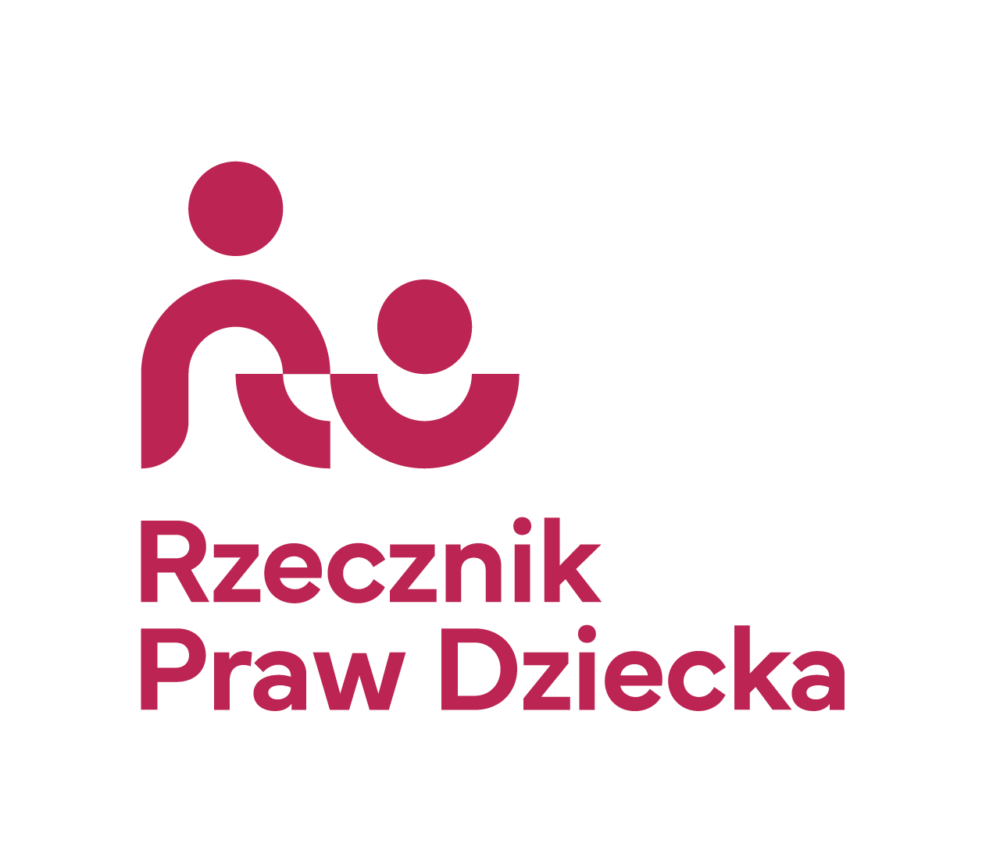
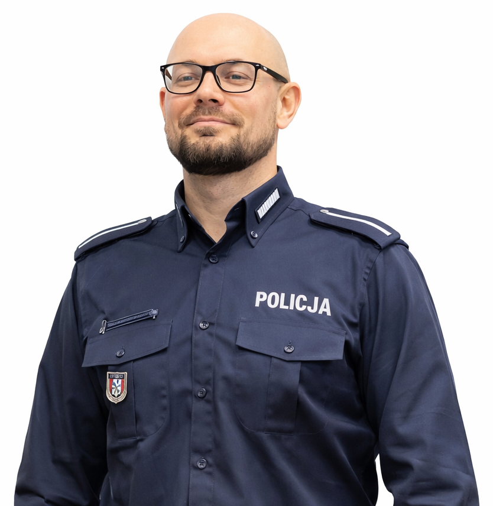

O Konferencji
Dzieci dorastają dziś w świecie, który zmienia się szybciej niż systemy, które mają je chronić. Internet jest dla nich naturalną przestrzenią rozwoju, relacji i nauki, ale też źródłem realnych zagrożeń, z którymi często zostają same.
Konferencja „Dziecko Online: Wspólna Odpowiedzialność” powstała, by tę lukę zmniejszyć. To wydarzenie dla tych, którzy chcą lepiej rozumieć, reagować i skutecznie chronić dzieci. Poruszamy tematy cyberprzemocy, uzależnień cyfrowych, pornografii, przestępczości internetowej oraz ich konsekwencji psychicznych i neurologicznych.
Celem konferencji jest połączenie instytucji i specjalistów, którzy realnie wpływają na bezpieczeństwo dzieci, oraz przełożenie wiedzy na konkretne działania.
Do rozpoczęcia konferencji pozostało:
0
dni
0
godzin
0
minut
0
sekund
Film promocyjny
Lokalizacja
-
📍
Międzyrzecki Ośrodek Kultury
ul. Konstytucji 3 Maja 30
66-300 Międzyrzecz - 🚪 Wejście od ul. Konstytucji 3 Maja
- 🚗 Parking bezpłatny
Patronat Honorowy





Agenda
Otwarcie konferencji
mgr Iwona Jackowska
Wystąpienie zaproszonych gości
Ochrona dzieci w sieci jako zadanie państwa - aktualne regulacje i kierunki zmian
Posłanka Maja Nowak
Bezpieczeństwo dzieci w środowisku cyfrowym - zadania i odpowiedzialność systemu edukacji
Podsekretarz stanu Izabela Ziętka
Uzależnienia behawioralne u dzieci i młodzieży z ADHD: szkoła, dom, ekran
dr Błażej Antosz
Współczesne zagrożenia cyfrowe: hejt, pornografia, uzależnienia behawioralne
mgr Przemysław Najmuł
Uzależnienia cyfrowe jako nowe wyzwanie zdrowia psychicznego dzieci
mgr Izabela Sumińska
Praca w gabinecie z dzieckiem uzależnionym od sieci
mgr Anna Czekanowska - Gubska
Przestępczość internetowa wobec dzieci
asp. Adam Zauski
Stanowisko Kościoła wobec uzależnień behawioralnych związanych z technologią
ks. dr Dariusz Mazurkiewicz
Przerwa
Dziecko w Sieci – neurobiologiczne konsekwencje świata cyfrowego dla rozwoju i bezpieczeństwa dziecka
dr n. med. Przemysław Zakowicz
Słów kilka o higienie cyfrowej - jak mądrze prowadzić profilaktykę cyberzaburzeń i zachowań ryzykownych w sieci na poziomie domu i szkoły
mgr Agnieszka Taper
Zakończenie konferencji
mgr Maciej Jackowski
Prelegenci
Posłanka Maja Nowak
Sekretarz stanu w Ministerstwie Rodziny, Pracy i Polityki Społecznej
Izabela Ziętka
Podsekretarz stanu w Ministerstwie Edukacji Narodowej
dr Błażej Antosz
Lekarz, specjalista Psychiatra, specjalista Psychiatrii Dzieci i Młodzieży
mgr Przemysław Najmuł
Prezes Fundacji Promocji Zdrowia Psychicznego FENIKS
dr n. med. Przemysław Zakowicz
Konsultant Wojewódzki Psychiatrii Dzieci i Młodzieży
ks. dr Dariusz Mazurkiewicz
Wykładowca prawa kanonicznego oraz pracownik w wydziale teologicznym
mgr Izabela Sumińska
Konsultant Wojewódzki w dziedzinie Psychologii Klinicznej
mgr Anna Czekanowska - Gubska
Certyfikowany Psychoterapeuta Systemowy

Adam Załuski
Aspirant
mgr Agnieszka Taper
Socjolożka, Edukatorka medialna Fundacji Bonum Humanum